#2019/03/20 made for training. Full analysis of 4D and WFS data.# Make sure to run all the import, then go to WFS section at bottom if you are onl from pySurf.fit_cylinder import*from pySurf.points import*#from calibrate_align import *from pyProfile.profile import polyfit_profile,level_profilefrom pyProfile.psd import psdfrom plotting.multiplots import compare_imagesfrom dataIO.fn_add_subfix import fn_add_subfix#from PSDanalysis import *from pySurf.instrumentReader import matrix4D_readerfrom pySurf.instrumentReader import points_reader
Once deleted, variables cannot be recovered. Proceed (y/[n])? y
Using matplotlib backend: Qt5Agg
Populating the interactive namespace from numpy and matplotlib
The autoreload extension is already loaded. To reload it, use:
%reload_ext autoreload
#load and mark fiducialswdata,x,y=matrix4D_reader(ff,ypix=ypix,ytox=ytox,zscale=zscale,scale=scale,center=(0,0)) #,crop=crop)wdata=wdata-fit.fitConeMisalign(wdata)[0]plt.figure(2)plt.clf()plt.imshow(wdata,extent=(span(x)[0],span(x)[1],span(y)[0],span(y)[1]),aspect='equal',origin='lower')plt.grid()plt.title(os.path.basename(ff))plt.colorbar()#plt.waitforbuttonpress()display(plt.gcf())
from plotting.add_clickable_markers import add_clickable_markerstry:del(f)exceptNameError:passf=add_clickable_markers()
print f.markersm1=np.array(f.markers)
#no fiducials on this run, so set the same and don't rotatem1=np.array([[-22.197591521638955, 52.287308505612664], [34.976602822607845, 39.404854959643004], [40.312915159955537, 10.436302271184232]])
#use same coordinates as a trickref=np.array([[-22.197591521638955, 52.287308505612664], [34.976602822607845, 39.404854959643004], [40.312915159955537, 10.436302271184232]])#np.array([[-25.729465127215349, 43.331571386929248], [47.543004261442981, 41.213149412528466], # [53.325774874742166, 16.481499648030677], [38.240782357147616, 4.5143611051155741]])
from pySurf.distanceTable import distanceTableprint distanceTable(m1)print distanceTable(ref)print distanceTable(m1)-distanceTable(ref)
plt.plot(m1[:,0],m1[:,1],'x')display(plt.gcf())
plt.figure()for i inrange(3): plt.plot(m1[i,0],m1[i,1],'x')plt.gca().set_prop_cycle(None)for i inrange(3): plt.plot(ref[i,0],ref[i,1],'o')
import logging# create loggerlogger = logging.getLogger()logger.setLevel(logging.DEBUG)# create console handler and set level to debugch = logging.StreamHandler()ch.setLevel(logging.DEBUG)# create formatterformatter = logging.Formatter('%(asctime)s - %(name)s - %(levelname)s - %(message)s')# add formatter to chch.setFormatter(formatter)# add ch to loggerlogger.addHandler(ch)
C:\Users\Vincenzo\Google Drive\libraries\python\userKov3\pySurf\data2D.py:143: RuntimeWarning: invalid value encountered in greater
data[((data>zrange[1]) | (data<zrange[0]))]=np.nan
C:\Users\Vincenzo\Google Drive\libraries\python\userKov3\pySurf\data2D.py:143: RuntimeWarning: invalid value encountered in less
data[((data>zrange[1]) | (data<zrange[0]))]=np.nan
from pySurf.data2D import plot_slope_sliceplt.figure()plot_slope_slice(wdata,x,y,scale=(1,1,1000),vrange=(-1,1),srange=(0,30),filter=True)[0].set_title('full data')display(plt.gcf())plot_slope_slice(wdata2,x2,y2,scale=(1,1,1000),vrange=(-0.2,0.2),srange=(0,30),filter=True)[0].set_title('high order')display(plt.gcf())plot_slope_slice(leg[0],x2,y2,scale=(1,1,1000),vrange=(-1,1),srange=(0,30),filter=True)[0].set_title('low order')display(plt.gcf())
C:\Users\Vincenzo\Google Drive\libraries\python\userKov3\pySurf\data2D.py:445: RuntimeWarning: invalid value encountered in greater
slopeax=np.where(np.logical_and(slopeax>srange[0],slopeax<srange[1]),slopeax,np.nan)
C:\Users\Vincenzo\Google Drive\libraries\python\userKov3\pySurf\data2D.py:445: RuntimeWarning: invalid value encountered in less
slopeax=np.where(np.logical_and(slopeax>srange[0],slopeax<srange[1]),slopeax,np.nan)
C:\Users\Vincenzo\Google Drive\libraries\python\userKov3\pySurf\data2D.py:446: RuntimeWarning: invalid value encountered in greater
slopeaz=np.where(np.logical_and(slopeaz>srange[0],slopeaz<srange[1]),slopeaz,np.nan)
C:\Users\Vincenzo\Google Drive\libraries\python\userKov3\pySurf\data2D.py:446: RuntimeWarning: invalid value encountered in less
slopeaz=np.where(np.logical_and(slopeaz>srange[0],slopeaz<srange[1]),slopeaz,np.nan)
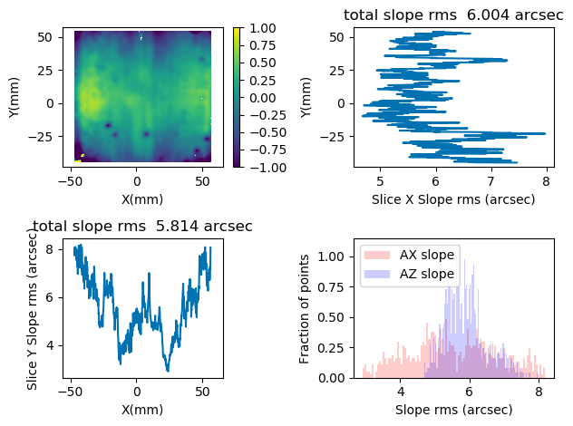
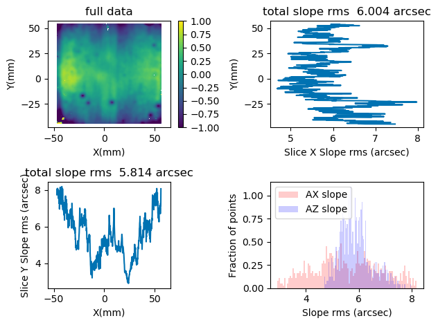
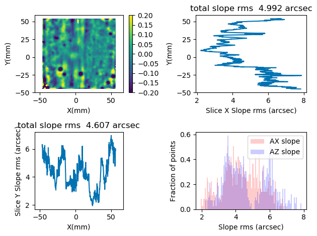
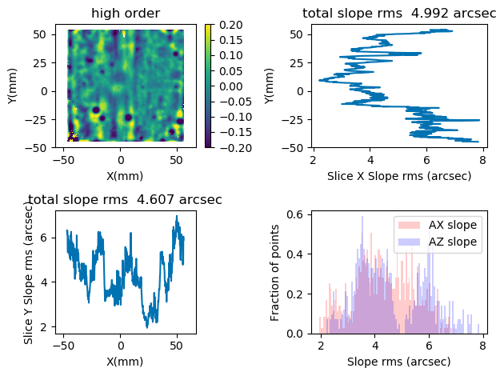
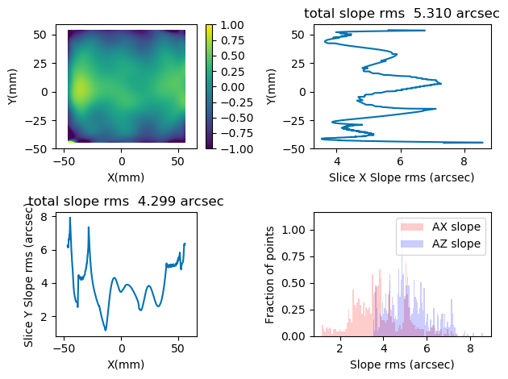
from pySurf.data2D import plot_slope_2Dplt.figure()plot_slope_2D(wdata,x,y,scale=(1,1,1000),vrange=(-1,1),srange=(-120,120))[0].set_title('full data')#plt.tight_layout()display(plt.gcf())plot_slope_2D(wdata2,x2,y2,scale=(1,1,1000),vrange=(-0.2,0.2),srange=(-120,120))[0].set_title('high order')display(plt.gcf())plot_slope_2D(leg[0],x2,y2,scale=(1,1,1000),vrange=(-1,1),srange=(-120,120))[0].set_title('low order')display(plt.gcf())
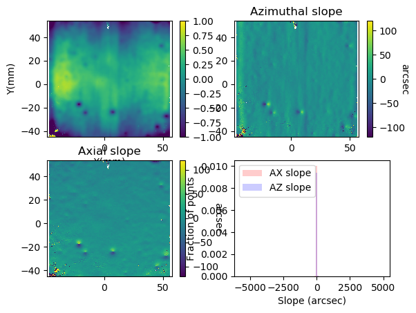
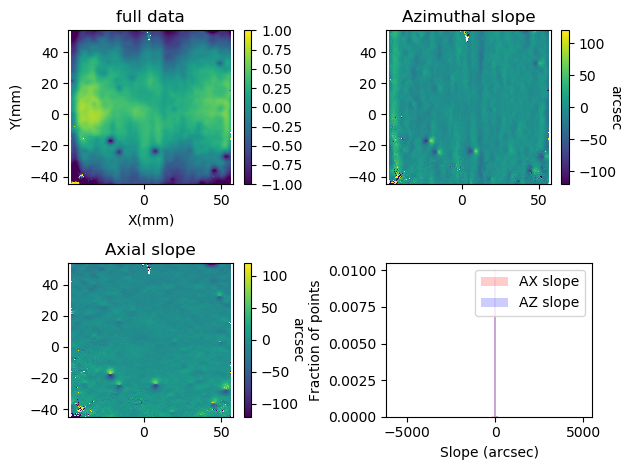
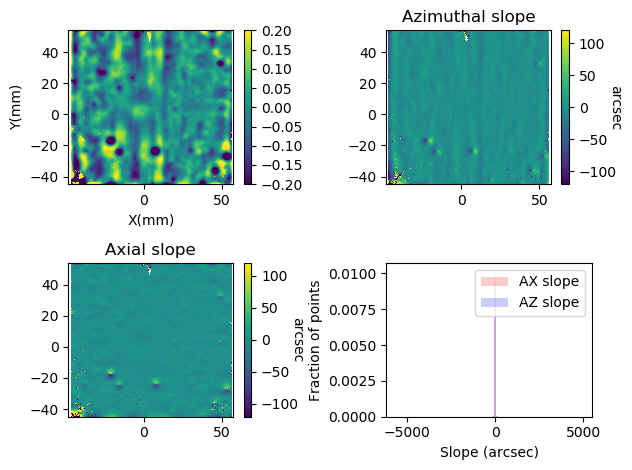
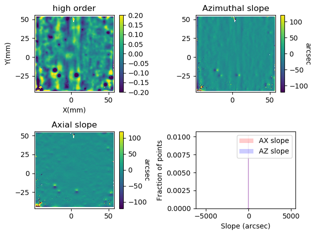
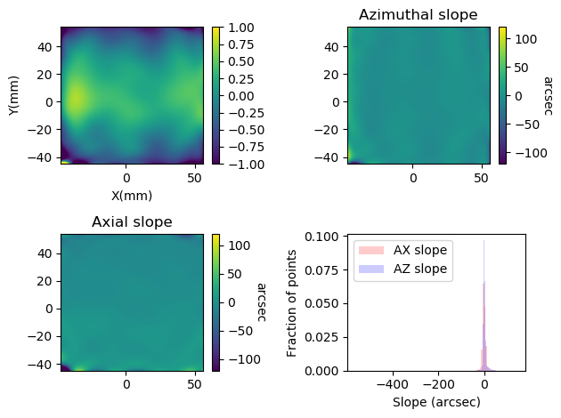
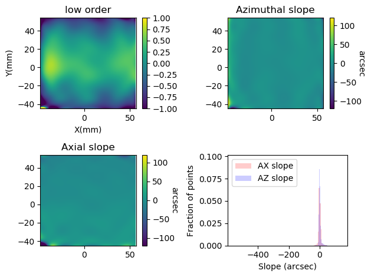
profiles=[((-10,-45),(-10,45)),((0,-45),(0,45)),((10,-45),(10,45))]plt.figure()plt.xlabel('Position (mm)')plt.ylabel('Height (um)')plt.title(os.path.basename(wf)+' line profiles')plt.grid(1)for p in profiles: pp0,pp1=p xp1,yp1=level_profile(*extract_profile(p2,pp0,pp1)) plt.plot(xp1,yp1,label='%s -- %s'%(pp0,pp1))plt.legend(loc=0)display(plt.gcf())plt.savefig(fn_add_subfix(outfile,'_profiles','.png'))
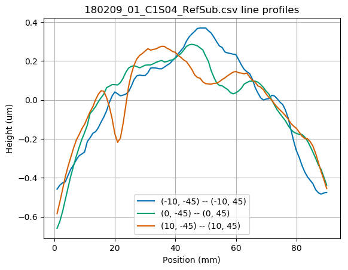
sag removed
# alternative starting pointp2=get_points(fn_add_subfix(outfile,'_4in','.dat'),delimiter=' ')#p2=level_points(crop_points(p2),[-11,11],[-30,30]) #level using points on central region
profiles=[((-10,-45),(-10,45)),((0,-45),(0,45)),((10,-45),(10,45))]plt.figure()plt.xlabel('Position (mm)')plt.ylabel('Height (um)')plt.title(os.path.basename(wf)+' line profiles')plt.grid(1)for p in profiles: pp0,pp1=p xp1,yp1=extract_profile(p2,pp0,pp1) plt.plot(xp1,yp1,label='%s -- %s'%(pp0,pp1))plt.legend(loc=0)display(plt.gcf())plt.savefig(fn_add_subfix(outfile,'_profiles_sag','.png'))
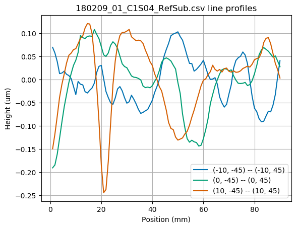
PSD
# alternative starting pointp2=get_points(fn_add_subfix(outfile,'_4in','.dat'),delimiter=' ')
crop=[-38,45],[-45,45] #want to avoid bad data due to scratchesprange=np.array((1e-8,1.e-1))#np.array((5e-8,1.e-5)) #color scale of 2d psd plotrmsrange=[[None,0.1],[0.1,1],[1,None]] #range of frequency for rms calculation vrange_surf=([-0.5,0.5]) #color scale of surface mapvrange_leg=([-0.05,0.05]) #color scale of legendre removed map
plt.close('all')
from pySurf.data2D import crop_datawdata,x,y=points_autoresample(p2)wdata,x,y=crop_data(wdata,x,y,*crop)
C:\Users\Vincenzo\Google Drive\libraries\python\userKov3\pySurf\data2D.py:143: RuntimeWarning: invalid value encountered in greater
data[((data>zrange[1]) | (data<zrange[0]))]=np.nan
C:\Users\Vincenzo\Google Drive\libraries\python\userKov3\pySurf\data2D.py:143: RuntimeWarning: invalid value encountered in less
data[((data>zrange[1]) | (data<zrange[0]))]=np.nan
from pyProfile.makenicePSDplots import make_plotsfrom collections import OrderedDictpf2=[r'results\C1S04\180111_C1S04_RefSub_psd.dat', fn_add_subfix(outfile,'_psd','.dat') ]l2=['C1S04 before cut', plotTitle]#outfile=fn_add_subfix(ff,'_psdcomp','.png')make_plots(OrderedDict(zip(pf2,l2))) #,outfile)#plt.xlim((0.01,10))#plt.ylim((1e-6,0.01))display(plt.gcf())plt.savefig(fn_add_subfix(outfile,'_psdcomp','.png'))
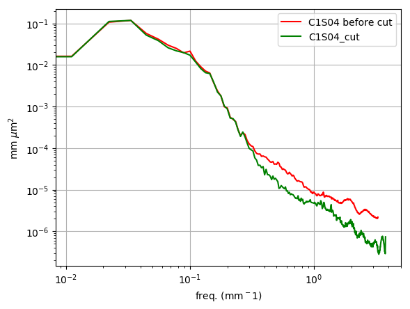
C:\Anaconda2\envs\py36\lib\site-packages\matplotlib\colors.py:1012: RuntimeWarning: invalid value encountered in less_equal
mask |= resdat <= 0
END
WFS
from pySurf.instrumentReader import fitsWFS_readerfrom pySurf.affine2D import plot_transform,find_rototrans,find_affinefrom pySurf.distanceTable import distanceTable
#get data from WFS measurement of PCO1S16infolder=r'C:\Users\Vincenzo\Google Drive\Shared by Vincenzo\Metrology logs and data\measure_data\4D_data\Metrology\C1S04\WFS'wf=os.path.join(infolder,r'180206_C1S04_GentexCut_Meas3.fits')
C:\Users\Vincenzo\Google Drive\libraries\python\userKov3\pySurf\data2D.py:143: RuntimeWarning: invalid value encountered in greater
data[((data>zrange[1]) | (data<zrange[0]))]=np.nan
C:\Users\Vincenzo\Google Drive\libraries\python\userKov3\pySurf\data2D.py:143: RuntimeWarning: invalid value encountered in less
data[((data>zrange[1]) | (data<zrange[0]))]=np.nan
WARNING: points number doesn't match regular grid for size determined by points_find_grid
WARNING: points number doesn't match regular grid for size determined by points_find_grid
WARNING: routine was modified to have filename as first argument, modify IMMEDIATELY
the calling code. Corrected automatically for this time, but I will punish you waiting 5 seconds.
WARNING: routine was modified to have filename as first argument, modify IMMEDIATELY
the calling code. Corrected automatically for this time, but I will punish you waiting 5 seconds.
WARNING: points number doesn't match regular grid for size determined by points_find_grid
WARNING: points number doesn't match regular grid for size determined by points_find_grid
WARNING: points number doesn't match regular grid for size determined by points_find_grid
WARNING: points number doesn't match regular grid for size determined by points_find_grid